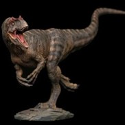

Habitó fundamentalmente en Norteamérica y Europa, y su nombre significa reptil extraño o diferente. La altura del Alosaurio era de 8,5 Metros de longitud y 3,5 de Metros de altura; en tanto su peso solía ser de, al menos una tonelada. Al ser carnívoro, se alimentaba de pequeños dinosauris y una de sus características es que tenía protuberancias delante de sus ojos

El Tiranousaurios Rex
El Tiranousaurios Rex es quizá el dinosaurio más conocido y su nombre significa Reptil Tirano. Era uno de los más temidos, por ser uno de los carnívoros más feroces. Este dinosaurio medía de 10 a 14 metros de longitud y pesaba entre cuatro y siete toneladas. Tyrannosaurus rex, es la única especie conocida del género fósil Tyrannosaurus de dinosaurio terópodo tiranosáurido, que vivió a finales del período Cretácico, hace aproximadamente entre 68 y 66 millones de años, en el Maastrichtiense, en lo que es hoy América del Norte.
El Velociraptor
El Velociraptor era uno de los dinosaurios más rápidos e inteligentes, según la historia y vivió en el periodo Cretácico tardío.Este dinosaurio era carnívoro y medía 1.8 metros de longitud y pesaba 15 kilogramos. Además, con las garras de sus patas podía matar a sus presas. Velociraptor es un género de dinosaurios terópodos dromeosáuridos que vivieron durante el Campaniaense, hacia finales del período Cretácico, hace unos 75 a 71 millones de años, en lo que es hoy Asia
Espinosaurio
Los Espinosaurios tenían el cráneo parecido al de los cocodrilos actuales, pero su tamaño era mucho mayor. Podían alcanzar entre los doce y los diecinueve metros de largo y pesar de siete a veinte toneladas. Están considerados los dinosaurios carnívoros más grandes conocidos, mayores aún que el famoso Tyrannosaurus rex.El Spinosaurus es el primer dinosaurio adaptado para nadar que se conoce hasta el momento y el carnívoro más grande del que se tiene noticia